Aco Subscription and Recurring Payments Pro for WooCommerce
Sell subscription products in WooCommerce and collect recurring payments automatically with Stripe and PayPal, or with manual payment links. Pro adds variable plans, plan switching, subscription coupons, customer self-service, smart payment retries, card expiry reminders, cancellation surveys, reports and email marketing sync.
Free vs Pro
Everything in the free plugin is included in Pro. Pro adds the features below, built for stores that want to grow subscription revenue and keep subscribers longer.
| Feature | Free | Pro |
|---|---|---|
| Products | ||
| Simple subscription productsPrice, billing interval & period, length, sign-up fee | ✓ | ✓ |
| Free trials | ✓ | ✓ |
| Billing synchronisation with prorated first payment | ✓ | ✓ |
| Manual-renewal-only products, one subscription per customer limit | ✓ | ✓ |
| Variable subscription productsEach variation with its own price, schedule, length, sign-up fee and trial | — | ✓ |
| Separate shipping schedulee.g. billed yearly, shipped monthly | — | ✓ |
| Bulk price change for existing subscribersWith effective date and customer email | — | ✓ |
| Payments | ||
| Automatic renewals with Stripe and PayPal | ✓ | ✓ |
| Manual renewals with invoice email (bank transfer, cheque…) | ✓ | ✓ |
| Automatic failed-payment retries (fixed schedule) | ✓ | ✓ |
| Smart retriesRetry by Stripe decline reason; skip hopeless cards | — | ✓ |
| Card expiry reminders & Update Card page | — | ✓ |
| Customers (My Account) | ||
| View subscriptions, cancel, suspend & resume, renew manual subscriptions | ✓ | ✓ |
| Plan switching (upgrade / downgrade with proration) | — | ✓ |
| Renew early | — | ✓ |
| Resubscribe to cancelled or expired subscriptions | — | ✓ |
| Auto-renew on / off toggle | — | ✓ |
| Pause limit per subscription | — | ✓ |
| Marketing & retention | ||
| Subscription couponsRecurring % / fixed for N payments, sign-up fee discounts | — | ✓ |
| One free trial per customer (per product or per store) | — | ✓ |
| Cancellation survey | — | ✓ |
| Retention offer before cancelling | — | ✓ |
| Mailchimp & Klaviyo sync | — | ✓ |
| Admin, emails & data | ||
| Subscriptions dashboard with status cards, search, filters and bulk actions | ✓ | ✓ |
| 26 customer & admin subscription emails, reminder emails | ✓ | ✓ |
| Card Expiring and Price Changed emails | — | ✓ |
| Import / export & migration (WooCommerce Subscriptions, YITH, SUMO, CSV) | ✓ | ✓ |
| Outgoing webhooks for subscription events | ✓ | ✓ |
| Cancellations report | — | ✓ |
| CSV report exports (payments, monthly summary, cancellations) | — | ✓ |
| In-plugin Help tab (documentation, FAQs, video tutorials) | — | ✓ |
Getting started
From installation to your first subscription order in a few minutes.
- Install and activate WooCommerce. For automatic renewals, also install WooCommerce Stripe Gateway and/or WooCommerce PayPal Payments and connect your account.
- Upload and activate Aco Subscription and Recurring Payments Pro from Plugins → Add New → Upload Plugin. A Subscriptions menu appears in the admin.
- Go to Subscriptions → Settings → General and make sure Enable Subscriptions is on.
- Go to Subscriptions → Settings → Payment and enable the gateways you use. Turn on Accept Manual Payment if you also want bank transfer or cheque.
- Create a subscription product (see Simple subscriptions).
- Place a test order. The subscription appears under Subscriptions and in the customer's My Account → Subscriptions.
Subscriptions dashboard Free + Pro
All subscriptions in one place: Subscriptions → Subscriptions.
- Status cards: total, active, trial, pending, on hold, cancelled and expired at a glance.
- Search and filters by status, payment method and billing period.
- Each row shows the customer, products, status, paid amount, next payment and trial end, plus the related renewal orders.
- Bulk actions and Import / Export.
The top tabs are Subscriptions, Settings, Cancellations, Exports and Help.
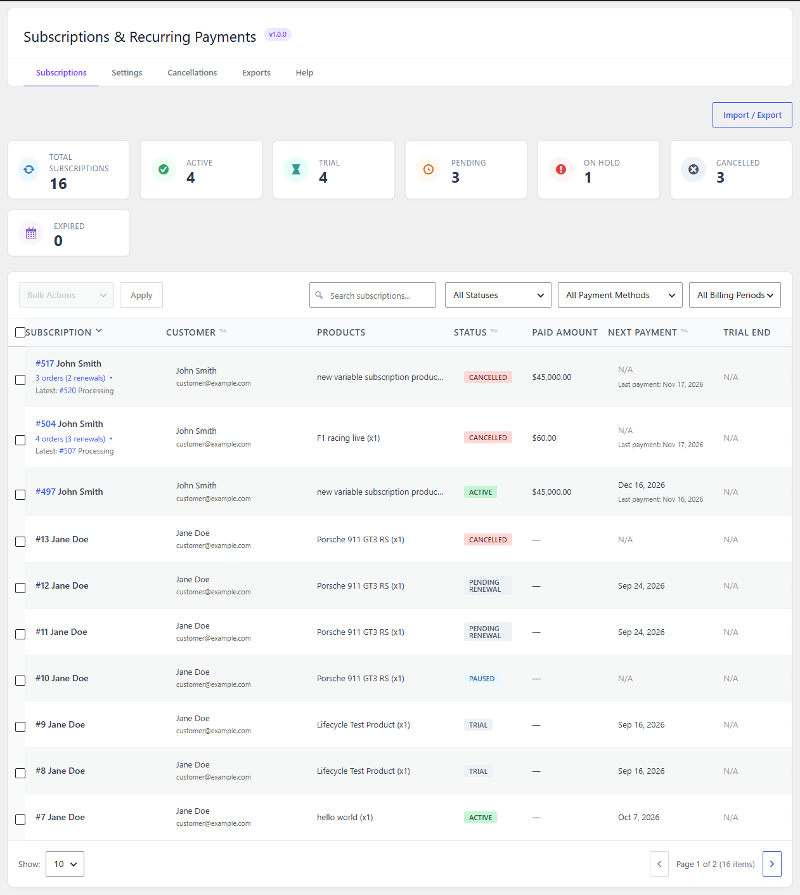
Simple subscription products Free + Pro
Go to Products → Add New and choose the product type Simple Subscription.
| Field | What it does |
|---|---|
| Subscription Price, Billing Interval, Billing Period | The recurring amount and how often it is charged, e.g. 20 every 1 Month. |
| Length Type | Never Expires, or Limited Length for a fixed number of billing cycles (e.g. a 12-month course). |
| Sign-up Fee | A one-time fee charged at checkout only. |
| Enable Free Trial | Trial length and period. The first payment is taken when the trial ends. |
| Require Manual Renewal | Renewals are always paid from an invoice email, never charged automatically. |
| Enable Billing Synchronization | Bill every subscriber on the same day (e.g. the 1st of the month). The first payment is prorated. |
| Limit Subscriptions | One active subscription per customer for this product. |
| Shipping Schedule Pro | Ship more often than you bill. See Shipping schedule. |
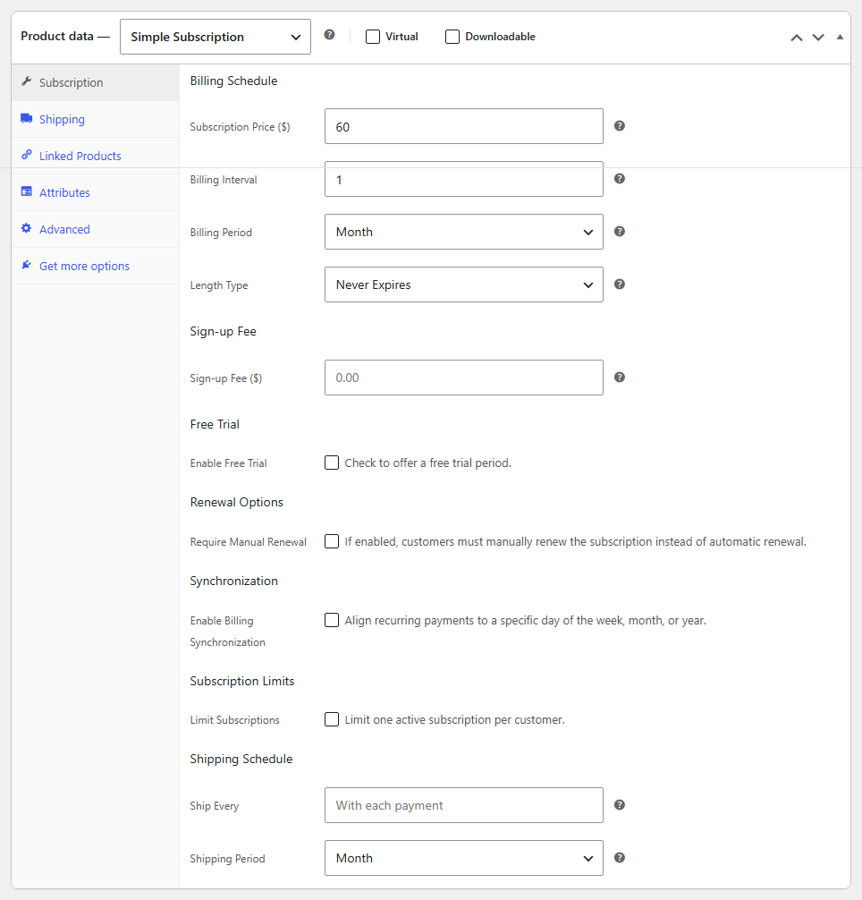
Variable subscription products Pro
Offer several plans in one product: sizes, tiers or billing frequencies.
- Choose the product type Variable Subscription.
- Fill in the Subscription tab. These are the defaults for every variation.
- Add attributes (e.g. Plan: Basic, Plus, Premium) and create variations as usual.
- In each variation, set the price and, if needed, its own Bill every, Billing period, Length, Sign-up fee and Free trial. Empty fields use the parent's values ("Same as parent").
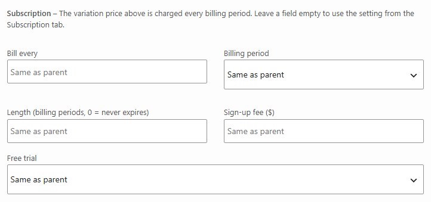
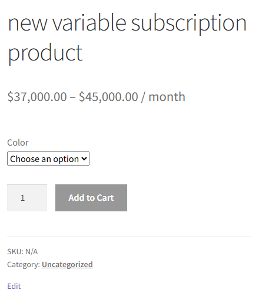
Separate shipping schedule Pro
Bill on one schedule and ship on another.
On the product's Subscription tab, set Ship Every and Shipping Period. Leave Ship Every empty to ship with each payment, as usual.
Between payments, the plugin creates $0 shipment orders on the shipping schedule. They appear in WooCommerce → Orders like any other order, so your fulfilment process doesn't change.
Price change for existing subscribers Pro
Normally a new product price applies only to new subscribers. This tool moves existing subscribers to the new price.
- Change the product price and click Update.
- The Existing Subscribers: Price box on the product edit screen shows how many subscribers pay a different price.
- Choose From each subscriber's next renewal or From renewals on or after a date.
- Keep Email customers about the change on to send the Subscription Price Changed email.
- Click Update N subscribers. Each subscription switches to the new price on its effective date.

Payment gateways & renewals Free + Pro
Subscriptions → Settings → Payment
- Stripe and PayPal: the card or PayPal account is saved at checkout and charged automatically on each renewal date.
- Manual payments (bank transfer, cheque): on the due date a renewal order is created and the customer receives an invoice email with a payment link. Cash on delivery is hidden for subscription products.
- Renewals run in the background with WooCommerce's Action Scheduler (Tools → Scheduled Actions, hook names start with
acosuanr_).

Failed payments & smart retries
Recover revenue from declined renewals automatically.
Automatic retries Free + Pro
Turn on Automatic Failed Payment Retry, then choose the Maximum Retry Attempts, the wait before each attempt and the Failure Action (put the subscription on hold, or cancel it) when every retry fails. The customer gets an email with a link to pay with another card.
Smart retries Pro
Turn on Smart Retries to decide by the reason Stripe gives for the decline:
- Stolen, lost, fraudulent, expired or blocked cards are not retried, because retrying can't succeed. The customer is asked to pay with another card straight away.
- Insufficient funds uses its own schedule (Insufficient Funds Retry Days, default after 1, 3 and 5 days), timed for when money is more likely to be there.
- Other declines use the normal retry schedule.
Card expiry reminders & Update Card Pro
Prevent failed renewals before they happen.
- When a saved Stripe card will expire before the next charge, the customer gets a Card Expiring Reminder email. Set the timing in Settings → Notifications → Card Expiry Reminder (default 14 days). It is sent once per card.
- The email links to the Update Card page in My Account, where the customer adds a new card or chooses which saved card pays future renewals.
Customer self-service (My Account)
Customers manage their own subscriptions in My Account → Subscriptions, which means fewer support emails for you. Switch each option on under Settings → General.
| Action | Setting | |
|---|---|---|
| View subscriptions, payments and dates; add notes | Always on | Free |
| Cancel | Customer Cancellation | Free |
| Suspend & resume | Always on | Free |
| Limit how often a subscription can be paused | Maximum Pauses per Subscription (0 = no limit) | Pro |
| Switch Plan | Allow Plan Switching | Pro |
| Renew Early: pay the next renewal now; the next payment date moves one period later | Allow Early Renewal | Pro |
| Resubscribe to a cancelled or expired subscription (no new trial or sign-up fee) | Allow Resubscribe | Pro |
| Turn auto-renew off (renewals arrive as invoices) and back on | Allow Customers to Turn Auto-Renew On or Off | Pro |
| Update Card (Stripe) | Always on for Stripe subscriptions | Pro |
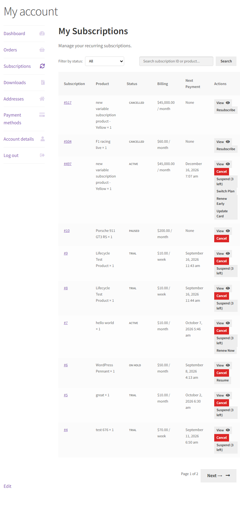
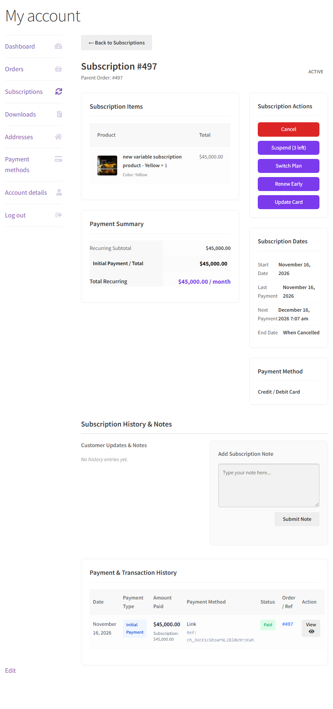
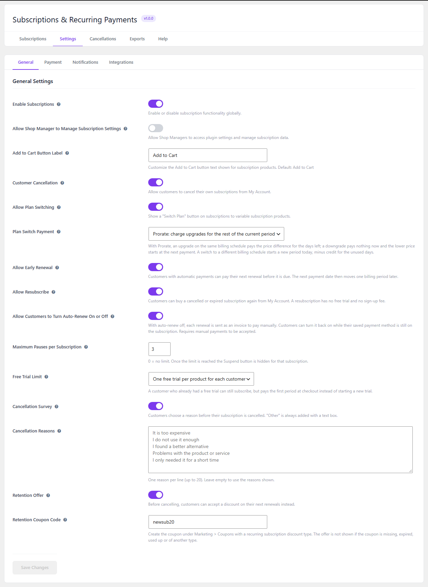
Plan switching Pro
Let customers upgrade or downgrade between variations of a variable subscription.
- Turn on Allow Plan Switching in Settings → General.
- Choose the Plan Switch Payment rule: prorate (upgrades pay the difference for the rest of the current period now) or no charge now (the new price applies from the next payment).
- Customers click Switch Plan on their subscription, choose a plan and confirm. Downgrades always start at the next payment.

Subscription coupons Pro
Normal WooCommerce coupons only discount the first order. Subscription coupons can also discount renewals.
In Marketing → Coupons → Add coupon, choose a discount type:
| Discount type | What it discounts |
|---|---|
| Recurring subscription % discount | The first payment and renewals, by a percentage. |
| Recurring subscription fixed discount | The first payment and renewals, by a fixed amount. |
| Sign-up fee % discount | The one-time sign-up fee, by a percentage. |
| Sign-up fee fixed discount | The one-time sign-up fee, by a fixed amount. |
Active for payments limits a recurring discount to the first N payments. Leave it empty to discount every payment.
20, Active for payments 3. From the fourth payment the customer pays the full price.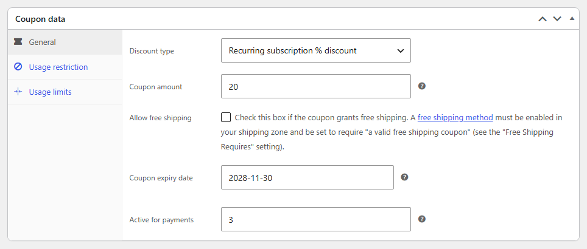
Free trial limit Pro
Stop customers from taking the free trial again and again.
In Settings → General → Free Trial Limit, choose:
- No limit: the default behaviour.
- One free trial per product for each customer.
- One free trial in the store for each customer.
A customer who already had a trial can still subscribe. They just pay the first period at checkout instead of starting a new trial. Customers are recognised by account and billing email.
Cancellation survey, retention offer & report Pro
Learn why customers leave, and give them a reason to stay.
Cancellation survey
Turn on Cancellation Survey in Settings → General. When a customer clicks Cancel, they first choose a reason. Edit the list in Cancellation Reasons, one per line. "Other" with a text box is always added.
Retention offer
Create a recurring subscription coupon (e.g. 20% off the next 2 payments), turn on Retention Offer and enter the coupon code in Retention Coupon Code. Before cancelling, the customer is offered the discount. If they accept, the coupon is applied to their next renewals and the subscription stays active.

Cancellations report
The Cancellations tab shows, for any period: the number of cancellations, how many answered the survey, accepted retention offers, the save rate, a chart of reasons, recent cancellations (with signup date and the customer's comments) and accepted offers. Click Export CSV to download it.
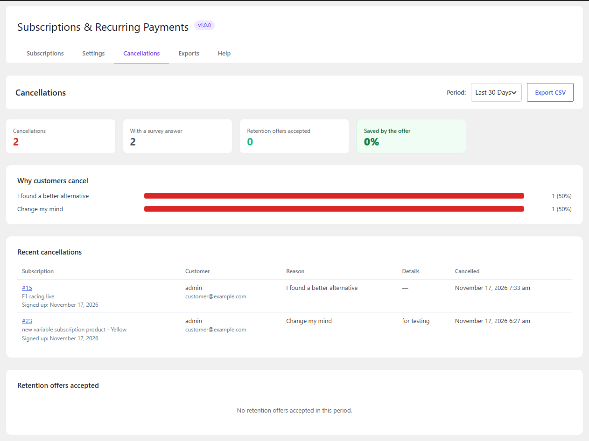
Emails & reminders
Keep customers informed automatically.
- Every subscription email can be edited, previewed or turned off in WooCommerce → Settings → Emails: Subscription Created, Activated, Renewed, Trial Started / Ending, Renewal Invoice, Payment Failed, Retry Scheduled, On Hold, Cancelled, Expired, Reactivated, Upcoming Renewal Reminder, Payment Method Updated, and admin copies of the important ones.
- Pro adds Card Expiring Reminder and Subscription Price Changed.
- Reminder timing is set in Subscriptions → Settings → Notifications: trial ending, auto-renewal, manual payment due, retry, and card expiry (Pro). Add the addresses that receive admin emails in Admin Recipient Email(s).
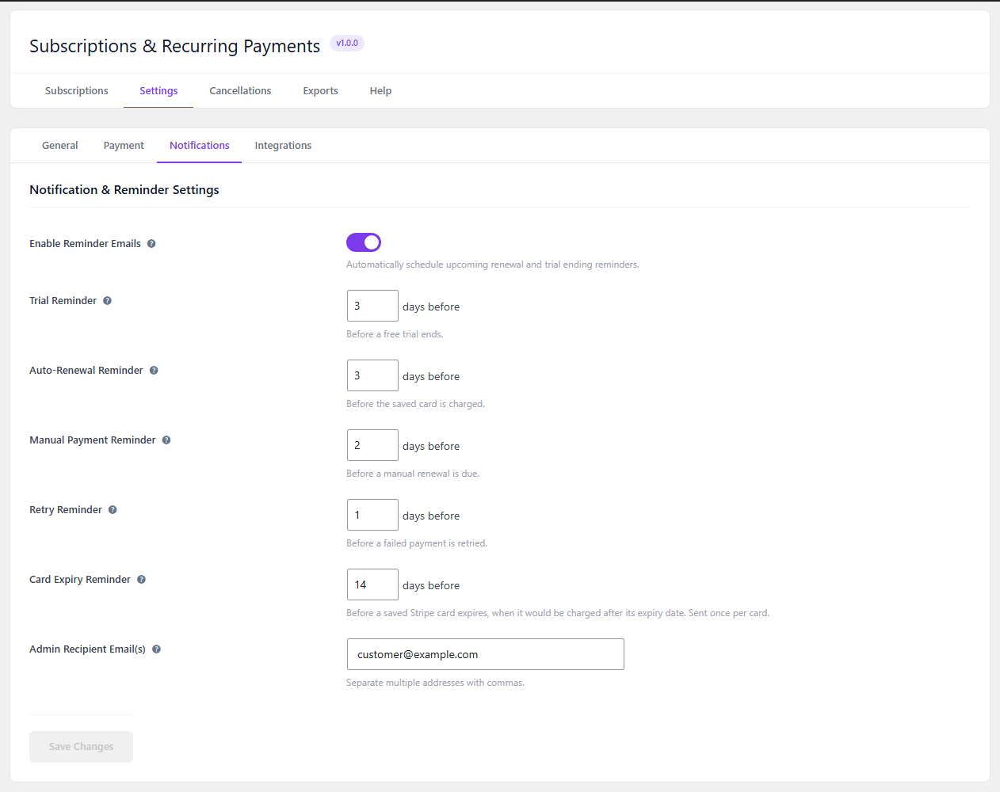
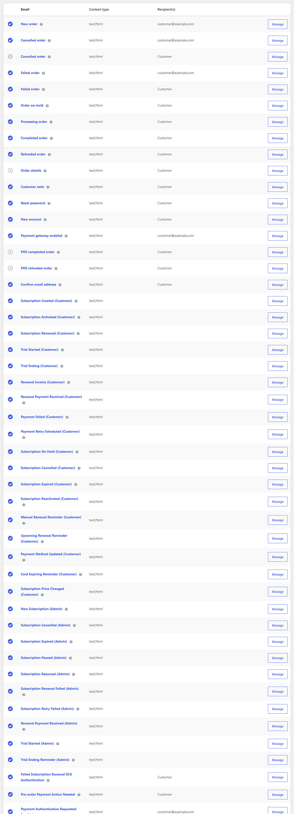
Reports & CSV exports Pro
The Exports tab: choose a period and download a CSV that opens in Excel, Google Sheets or Numbers.
| Export | Contents |
|---|---|
| Payments | Every subscription payment: initial orders, renewals, early renewals and plan switches, with subtotal, discount, fees, shipping, tax, total, refunds, payment method and transaction ID. |
| Monthly summary | One row per month: new subscriptions, cancellations, number of initial, renewal and switch payments, revenue, tax, refunds and net revenue. |
| Cancellations | Cancelled subscriptions with customer, product, signup and cancellation dates, and the survey answer. |
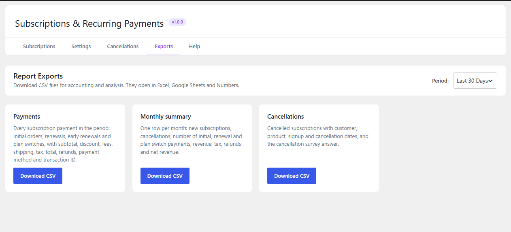
Mailchimp & Klaviyo Pro
Keep your email marketing tool up to date with each customer's subscription status, automatically.
- Go to Subscriptions → Settings → Integrations.
- Mailchimp: turn on Sync to Mailchimp, paste your API key (Mailchimp → Profile → Extras → API keys) and Audience ID (Audience → Settings → Audience name and defaults).
Klaviyo: turn on Sync to Klaviyo, paste a private API key with Profiles and Lists write access and, optionally, a List ID. - Click Test connection, then Save Changes.
- Click Sync All Customers Now once to sync existing subscribers. After that, customers are synced in the background whenever a subscription changes status.
- Mailchimp contacts get tags such as
Subscription: Active,Subscription: Cancelledand, optionally,Subscribed: Product name. Old status tags are removed when they no longer apply. - Klaviyo profiles get the properties Subscription Status, Subscription Statuses, Active Subscriptions, Subscription Products and Next Subscription Payment.
- The Recent Syncs table shows each sync and any error.
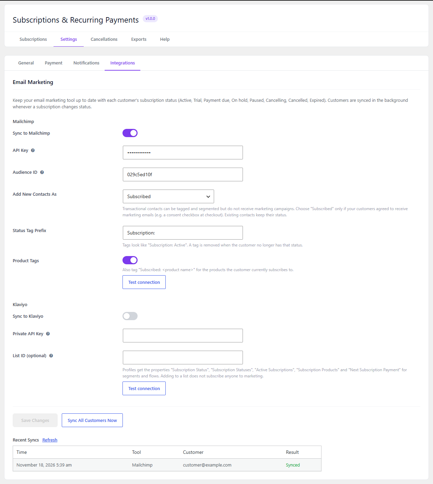
Import, export & webhooks Free + Pro
- Import / Export (button on the Subscriptions dashboard): back up and restore subscriptions, or migrate from WooCommerce Subscriptions, YITH, SUMO or a CSV file.
- Webhooks: send subscription events (created, status changed, renewed, cancelled, renewal payment failed) to your own URLs. Each request is signed with an
X-ACO-Webhook-SignatureHMAC SHA-256 header using your secret key.
Help tab Pro
Help inside the plugin: Subscriptions → Help.
An overview with a demo video, quick links, the full documentation, FAQs, video tutorials and a button to create a support ticket.
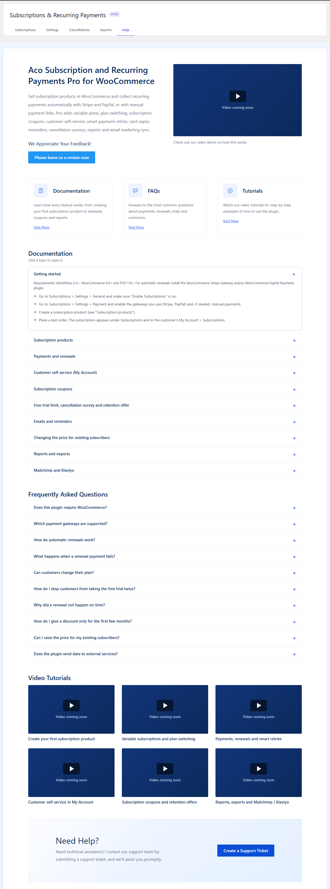
Frequently asked questions
Does this plugin require WooCommerce?
Which payment gateways are supported?
How do automatic renewals work?
What happens when a renewal payment fails?
Can customers change their plan?
How do I give a discount only for the first few months?
Can I raise the price for my existing subscribers?
How do I stop customers from taking the free trial twice?
Can I upgrade from the free plugin without losing data?
Does the plugin send data to external services?
Troubleshooting
| Problem | What to check |
|---|---|
| A renewal did not happen on time | Renewals need WP-Cron or site traffic. Check Tools → Scheduled Actions for pending or failed actions starting with acosuanr_. On low-traffic sites, set up a real server cron job. |
| "Switch Plan" button is missing | Turn on Allow Plan Switching. Switching only works for variable subscription products with at least one other variation. |
| Recurring coupon only discounted the first order | The coupon type must be Recurring subscription % / fixed discount, not a normal WooCommerce type. Check "Active for payments". |
| Card expiry emails are not sent | Card reminders need a saved Stripe card with an expiry date. Wallets such as Stripe Link have no expiry. Check the Card Expiry Reminder days in Notifications. |
| Mailchimp contacts are not tagged | Click Test connection and check the Recent Syncs table for errors. Syncs run in the background, so allow a minute after a status change. |
| Manual payment option not shown at checkout | Turn on Accept Manual Payment in Settings → Payment and enable the gateway in WooCommerce. Cash on delivery is always hidden for subscriptions. |